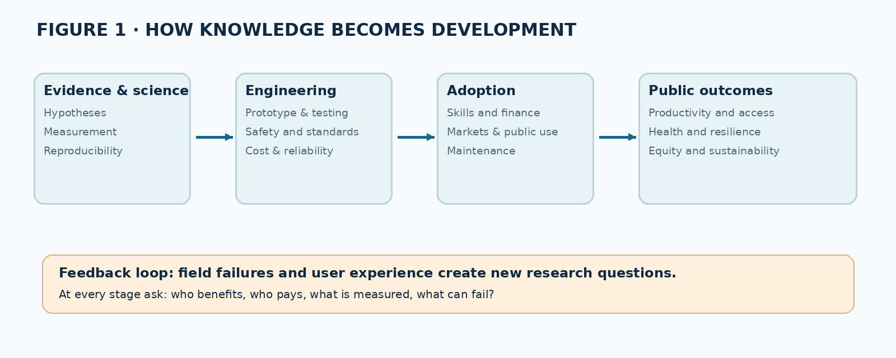
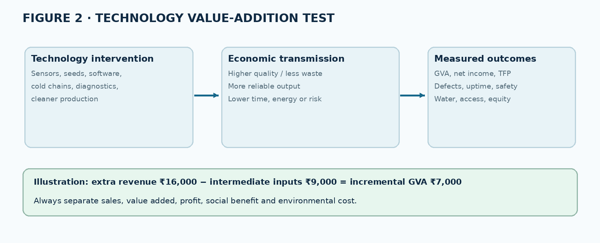
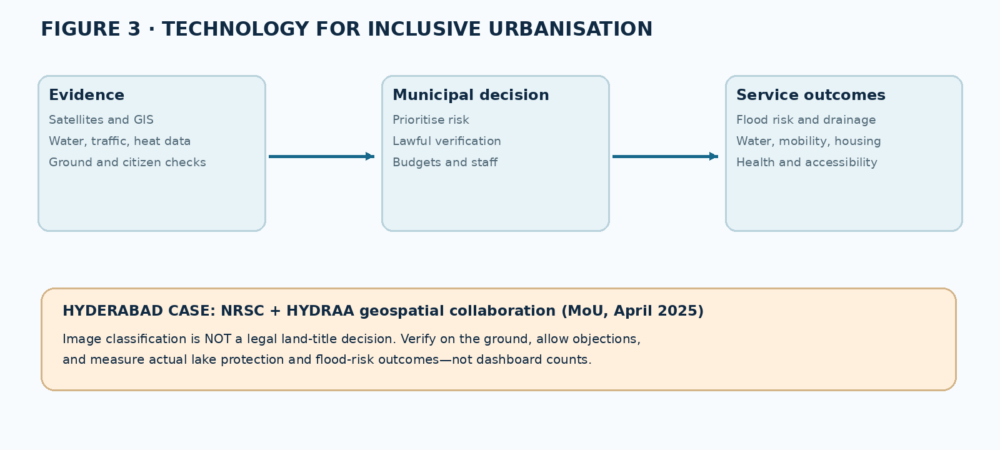

Download complete printable PDF · Editable Markdown
TGPSC Group I | Paper V — Science & Technology and Data Interpretation | Unit I — Role and Impact of Science and Technology | Topic 1 | English | Published learning draft — NOT academically approved
Commission-hosted Notification No. 02/2024, dated 19 February 2024, Annexure II, Paper V, Section I, Item 1: “Classical and Emerging areas of Science & Technology : Value addition by Science & Technology, Current Science & Technology developments in India and importance of Science & Technology as an engine for National Development ; Industrial development & Urbanization.” The original commission PDF was directly examined for this chapter. [S01]
| Syllabus element | Chapter coverage | Expected examination competence |
|---|---|---|
| Classical areas of S&T | §§1–3 | Explain verified contributions, methods, limitations and continuity |
| Emerging areas of S&T | §§8–12 | Distinguish enabling principles, applications, maturity and risks |
| Value addition by S&T | §§4–6, worked applications | Explain and calculate productivity, quality, inclusion and externalities |
| Current developments in India | §§7–12, 16 and dated source register | Identify institution, date, scale and status; avoid confusing targets with results |
| Engine for national development | §§5–9, 15–16 | Analyse productivity, public goods, resilience, human capital and distribution |
| Industrial development | §13 and applications | Explain industrial revolutions, Industry 4.0, MSMEs, clusters and technology adoption |
| Urbanisation | §14 and applications | Assess planning, public services, mobility, water, waste, climate and equity |
Question provenance: Every MCQ and mains question in this chapter is original practice, not a verified TGPSC previous-year question. No official PYQ is claimed. The content is a published draft, not an independently approved textbook.
Science is a disciplined way of building and revising explanations through evidence; technology is the application of knowledge, techniques and organised capabilities to solve problems; innovation is the successful adoption or diffusion of a new or improved product, process or organisational arrangement. Their economic value arises only when ideas move through institutions, production systems, skills and public services. India's classical contributions in mathematics, medicine, metallurgy, agriculture and astronomy illustrate cumulative knowledge, while contemporary advances in AI, biotechnology, quantum systems, advanced materials, space data and clean energy illustrate the convergence of disciplines. For public policy, the decisive questions are whether technologies raise productivity, reduce risks, expand capabilities, protect rights and reach smaller firms and underserved communities. India has built major scientific institutions since independence; recent public programmes aim to strengthen research-to-market pathways, but approvals and funding envelopes must not be mistaken for realised outcomes. Telangana's research institutions and innovation intermediaries make the relationship concrete, from Hyderabad-based satellite mapping to startup incubation and hardware prototyping. Industrialisation needs complementary capital, reliable infrastructure and workers' skills; urbanisation needs inclusive governance rather than gadgets alone.
Science and the test of evidence. Science begins with observable questions, explicit assumptions, measurements and explanations that can be challenged by new evidence. A scientific claim is stronger when independent teams reproduce the result and when rival hypotheses are considered. Astronomy may predict an eclipse from a mathematical model; epidemiology may test whether an intervention lowers disease risk; materials science may explain why a particular alloy resists corrosion. Each discipline uses different methods, but none gains validity from authority alone. Scientific uncertainty is not a confession of ignorance: it identifies what remains unmeasured, the confidence attached to an inference and the conditions under which a conclusion may change. This is why a single laboratory demonstration should not be reported as a settled public-health solution or as a scalable industrial breakthrough.
Technology, engineering and innovation. Technology includes artefacts such as a sensor, processes such as sterile manufacturing, and systems such as a municipal water-treatment network. Engineering translates constraints—cost, safety, energy, materials, reliability, usability—into working designs. Innovation occurs when a new or improved solution is actually adopted and creates value. A patent can protect an invention that nobody uses; a farmer's redesigned implement can be an important process innovation without sophisticated intellectual property. Innovation can be incremental, architectural, radical or organisational. Incremental improvement often delivers more aggregate benefits than spectacular breakthroughs because it can be repeated across millions of everyday transactions.
Knowledge chains and feedback. The linear formula “science produces technology, which produces growth” is incomplete. Factory breakdowns reveal research questions; clinical observations inspire biomedical investigation; users modify devices in ways designers did not foresee. An innovation system therefore needs feedback among laboratories, entrepreneurs, workers, regulators, financiers and citizens. When a product is tested under ideal conditions, its performance may differ from performance in a district hospital with voltage fluctuations, scarce technicians and irregular supply chains. An examiner expects this distinction between scientific possibility, engineering feasibility, economic viability and social acceptability. Contrast: an optimistic view sees knowledge as an endlessly renewable growth resource; a critical view notes that market power, patents, unequal access and environmental costs can prevent benefits from reaching society.
Why this matters in Telangana. Hyderabad has research institutes, IT services, pharmaceuticals, biotechnology firms, space-data capabilities and incubators, but these assets do not automatically solve irrigation, primary-care or smaller-town employment challenges. The correct policy question is which institutional bridge takes an idea from a laboratory to a reliable service in Mahabubnagar, Adilabad or a Hyderabad low-income settlement. Public procurement, training, open standards and field evaluation often matter as much as invention.
Mathematical foundations. The Indian mathematical tradition includes positional notation, work with zero, arithmetic algorithms, geometry and algebraic reasoning. Aryabhata's Aryabhatiya (499 CE) used sophisticated numerical and astronomical methods; Brahmagupta's Brahmasphutasiddhanta (628 CE) developed rules involving zero and negative quantities. These contributions should be understood in their historical textual and intellectual context rather than collapsed into a claim that modern computing already existed in antiquity. Place-value notation became exceptionally powerful because it permitted compact representation and repeatable calculation; its later diffusion across cultures is a reminder that knowledge develops through exchange, translation and refinement.
Astronomy and observation. Classical astronomers constructed models of planetary motion and calendars and devised techniques for predicting celestial events. A prediction that can be checked is an important intellectual achievement even if its cosmological assumptions differ from modern astrophysics. Instrumental astronomy subsequently expanded the range and precision of observations, while contemporary satellites use atomic clocks, radio communication and orbital mechanics. The defensible continuity is mathematical reasoning and observational discipline—not an assertion that early texts contained modern satellite engineering. Similarly, mathematical advances were distributed across Indian, Persian, Arab, Chinese and European traditions; historians reconstruct transmission rather than assign exclusive ownership to a civilisation.
Evidence and historiography. For a mains answer, distinguish a primary text, a later commentary, an archaeological artefact and a modern scientific replication. A translated treatise may describe a method without demonstrating that it was universally practised. An inscription may date an instrument or institution without establishing its technological sophistication. Claims about “ancient aircraft”, “genetic engineering” or modern nuclear weapons in epics should not be presented as established scientific history. The proper approach is respectful of real achievements and sceptical of unsupported retrospective claims. This combination protects the credibility of India's genuine knowledge heritage and helps students resist misleading multiple-choice distractors.
Practical legacy. Numerical algorithms, calendrical methods, geometric surveying and measurement helped commerce, architecture, agriculture and administration. Their social impact depended on education and institutions capable of reproducing skills. Contemporary India can learn from this by supporting mathematics education, scientific temper and the translation of research into Indian languages, while maintaining independent verification and openness to criticism.
Medicine and the limits of analogy. The Charaka and Sushruta traditions preserve systematic discussions of diagnosis, pharmacology, anatomy and surgical procedures. They are valuable historical sources for medical practice and for understanding the relation between observation, apprenticeship and institutional knowledge. They must not be treated as clinical proof that every historical preparation is safe or effective today. Modern drug development requires pharmacological characterisation, toxicology, controlled studies, manufacturing quality and post-market surveillance. An answer that praises historical medicine while explicitly requiring modern evidence is stronger than one that treats tradition and evidence as competing loyalties.
Metallurgy and materials. The Delhi iron pillar and Indian crucible or wootz-steel traditions are frequently discussed examples of historical materials expertise. Their significance lies in the control of ores, carbon, furnace conditions, forging and surface properties, not in a mythical exemption from corrosion or physics. Metallurgy is a useful bridge between classical and emerging technology: modern alloys, composites, battery electrodes and semiconductor wafers all require precise control of microstructure and impurities. Quality assurance makes a material reproducible at scale; the best prototype has little public value if batch-to-batch variability causes failures in bridges, medical devices or electrical systems.
Agriculture and hydraulic systems. Traditional knowledge includes crop selection, soil and water management, mixed farming, seasonal observation and the construction of tanks and canals. In Telangana, the historical landscape of village tanks is a concrete illustration of engineering adapted to monsoon variability. But a tank's performance depends on its catchment, siltation, distribution rules and maintenance. A purely technical restoration without equitable access and watershed protection may fail. This is a recurring lesson: a technological artefact functions inside an ecological and institutional system. Indigenous crop diversity may improve resilience, while modern plant breeding and agronomy can add yield or resistance; the relevant comparison is evidence-based performance under local conditions.
Learning from the past without romanticisation. Traditional practices can provide hypotheses, designs and local ecological knowledge. They should be documented with consent and benefit sharing where appropriate, tested under controlled conditions and adapted without erasing community ownership. Some practices were labour-intensive, socially exclusionary or unsuited to current population densities. The balanced policy position is to conserve useful knowledge, improve it through contemporary science and reject unverifiable claims. This is especially important for public health, food safety and infrastructure, where errors impose costs on vulnerable citizens.
From output to value. Gross output is not the same as value added. In national accounts, gross value added is output less intermediate consumption. At the enterprise level, technology can raise value added by producing higher-quality goods with the same inputs, reducing wasted raw materials, extending shelf life, lowering energy per unit, increasing yield or creating new services. Consider a farmer who sells ungraded produce for ₹100 per unit while a cooperative sorts, cold-stores and markets it for ₹140. If grading, storage, transport and packaging require ₹25 in additional intermediate inputs, the incremental gross value added from those operations is ₹15, not ₹40. This calculation prevents the common mistake of calling all additional revenue “productivity”.
Productivity and diffusion. Labour productivity is output per worker or worker-hour; total factor productivity measures output growth not explained by the measured growth of labour and capital. Automation may increase labour productivity while displacing particular tasks. Whether workers benefit depends on retraining, wage bargaining, market structure and complementary employment. Precision agriculture may reduce water consumption per hectare, but if irrigated area expands rapidly, total groundwater extraction can still rise—a rebound effect. Digital payments may lower transaction costs, yet a vendor without connectivity or accessible grievance redress may face new exclusion. Evaluation must track distributional effects and environmental footprints, not only headline efficiency.
Quality, safety and time. Value addition is sometimes invisible in conventional sales data. A diagnostic test that gives an accurate result two days earlier can avert treatment delays; a sensor that prevents a boiler explosion creates risk-reduction value; an open data standard that lets departments exchange records saves administrative time. Such gains require suitable indicators: defects per million, hospital turnaround time, crop loss percentage, outage duration, commute reliability, energy intensity and beneficiary satisfaction. A sensible baseline and comparison group are needed before attributing changes to a new technology. Without these, officials may reward expensive equipment purchases rather than outcomes.
Distribution and public purpose. A technology can increase total welfare and still worsen inequality. Mechanisation may reduce drudgery but disadvantage landless workers if transition support is absent. AI may improve service triage but systematically misclassify people whose languages or circumstances are underrepresented in training data. The public sector should therefore evaluate accessibility, affordability, accountability, ecological cost and local maintenance. The highest-value intervention may be a low-cost water-quality test backed by a repair service, rather than a sophisticated dashboard with no operational follow-up.
Stages of translation. Basic research asks why a phenomenon occurs; applied research investigates how knowledge can solve a practical problem; development turns findings into repeatable designs; deployment integrates a solution into actual production or service. Technology Readiness Levels (TRLs) are a useful shorthand for technical maturity, but they do not measure regulatory acceptance, consumer demand or financing. A laboratory sensor may have excellent accuracy under controlled conditions and fail after six months of dust, humidity and power fluctuations. Prototypes need reliability tests, calibration standards, documentation, certification and service networks. In regulated fields, clinical or safety evidence is not optional.
The valley of death. Early research often relies on grants, while scale-up requires patient capital, market access and production know-how. The gap between promising proof of concept and commercially viable product is sometimes called the valley of death. Public research organisations may lack technology-transfer offices; entrepreneurs may lack access to test beds or customers; small firms may fear uncertain demand. Mechanisms include shared laboratories, pilot procurement, innovation challenges, concessional finance, incubators, university-industry partnerships and standards-setting. However, subsidies should have milestones and exit rules, because permanent protection can entrench weak firms.
Intellectual property and openness. Patents can reward costly invention but also raise access barriers and create patent thickets. Trade secrets protect manufacturing know-how; copyrights protect certain expressions and software; open-source licensing may accelerate adoption and interoperability. A public health emergency can expose tension between private returns and broad access. Policy should select instruments according to market failure and public need rather than assuming every innovation requires exclusive patents. Data governance adds another layer: personal data and genetic information require lawful use, security, consent or other appropriate legal basis, and safeguards against discrimination.
Research finance in India. The Anusandhan National Research Foundation was established under the 2023 Act and its first governing board met on 10 September 2024. Vigyan Dhara was approved on 24 August 2024 with a specified multi-year scheme outlay. The ₹1 lakh crore RDI scheme was approved in July 2025 and formally launched in November 2025; a parliamentary answer dated 29 July 2026 distinguishes sanctioned funds, disbursed funds and projects selected for support. This distinction is essential: an allocation is not expenditure, a sanctioned project is not a completed technology and a patent is not proof of commercial success. [S06–S09]
Growth and structural transformation. New technologies can increase productivity in existing sectors and enable entirely new sectors. Better crop varieties and irrigation management can release labour from low-productivity agriculture; manufacturing can absorb workers if firms have markets and skills; modern services can raise productivity through telecommunications, finance and logistics. Yet structural transformation is not automatic: an economy can expand digital services while retaining large numbers of informal workers in low-productivity occupations. Public investment in roads, electricity, health and education complements private innovation. Technology is therefore a necessary enabler, not a substitute for institutions or macroeconomic stability.
Human development and public goods. Vaccines, sanitation engineering, safe drinking water, assistive devices and accessible educational technologies can expand capabilities rather than merely raise GDP. Basic research produces knowledge spillovers that firms cannot fully capture, providing an economic rationale for government funding. The same is true for disease surveillance, meteorology, geological mapping and interoperable public data. The policy objective is not to maximise the number of gadgets purchased by departments; it is to improve outcomes such as survival, learning, safe mobility and disaster preparedness. In Telangana, reliable health diagnostics in district facilities may have a higher social return than another showcase laboratory in the capital.
Strategic autonomy and resilience. Dependence on imported components, specialised equipment or proprietary platforms creates vulnerabilities in defence, telecommunications, pharmaceuticals and energy systems. Domestic capabilities in chip design, fabrication, testing, vaccines, satellites and advanced materials can reduce some risks, but complete self-sufficiency is rarely efficient. International collaboration, diversified supply chains, standards compatibility and trusted research partnerships often strengthen resilience more than isolation. The practical test is whether critical functions continue during supply shocks, cyber incidents or geopolitical disruptions.
Developmental trade-offs. Technology can also increase emissions, e-waste, surveillance capacity, water consumption or labour insecurity. A data centre may support AI applications but impose electricity and cooling demands; an industrial park may create jobs while stressing groundwater; drones can improve mapping while raising privacy questions. Public policy must use environmental assessment, occupational standards, competition rules and participatory governance to align innovation with sustainable development. The strongest mains conclusion is conditional: S&T becomes an engine of development when scientific capability is matched by institutions, diffusion, skills, equity and accountability.
From the Green Revolution to precision agriculture. The Green Revolution was a package of high-yielding varieties, fertilisers, irrigation, extension, credit, procurement and price incentives. Its productivity gains were substantial in suitable regions, but the package also created concerns about groundwater depletion, nutrient imbalance and unequal access. Today's challenge is to increase resilience and farm incomes under heat, erratic rainfall and fragmented holdings. Improved germplasm, soil testing, integrated pest management, weather advisories, farm mechanisation, cold chains and producer organisations must be chosen as a coherent package. A drought-tolerant variety alone cannot compensate for failed markets or delayed insurance settlements.
Sensing, analytics and agronomy. Satellite imagery can identify vegetation condition and estimate surface characteristics, while ground sensors can measure soil moisture at particular points. Models may combine these observations with weather forecasts to recommend irrigation or detect crop stress. The February 2026 ISRO description of 100-metre NISAR soil-moisture products illustrates an emerging national asset, but remote-sensing outputs require calibration, validation and awareness of spatial resolution. A 100-metre pixel is not equivalent to an exact measurement for every small plot within it. Advisories should be understandable in local languages, delivered in time for decisions and evaluated against actual water savings and crop outcomes. [S15]
Telangana's specific context. Rainfed farming, tank irrigation, varied soils and smallholder vulnerability make technology choice location-specific. For cotton, pest surveillance and integrated management may reduce indiscriminate pesticide use; for paddy, alternate wetting and drying may save water where technically appropriate; for horticulture, cold-chain logistics may prevent post-harvest losses. A farmer-producer organisation can spread fixed costs of grading, storage and market information. However, equipment leasing models must account for repair access, seasonal demand and the possibility that a machine is idle most of the year. Women farmers and tenant cultivators may be excluded when digital services require land titles.
Evaluation design. Compare treated and similar untreated villages over more than one season, track rainfall and prices, measure actual input savings, and interview excluded farmers. Do not infer causality merely because an app was downloaded. A robust programme should publish advisory accuracy, cost per beneficiary, grievance-resolution times and environmental indicators. The goal is not to maximise technology penetration for its own sake but to improve farm resilience, net incomes and resource efficiency.
Biotechnology as a platform. Biotechnology uses biological systems or their components to develop useful products and processes. Recombinant DNA methods, sequencing, molecular diagnostics, fermentation, vaccines and biomanufacturing support healthcare, agriculture and industry. The BioE3 policy approved on 24 August 2024 seeks high-performance biomanufacturing through research, entrepreneurship and shared facilities; it is a policy framework, not evidence that all proposed facilities are already operational. GenomeIndia's research dataset of more than 10,000 sequenced genomes, opened for research in January 2025, can improve understanding of population diversity, but clinical use requires validated associations, representative samples, privacy protections and careful communication of uncertainty. [S12–S13]
From assay to healthcare delivery. A molecular diagnostic may detect a pathogen quickly, yet health impact depends on sample collection, quality assurance, trained personnel, turnaround time, treatment availability and follow-up. False positives can lead to unnecessary treatment; false negatives can delay care. Sensitivity and specificity must be interpreted alongside disease prevalence. Vaccination similarly requires cold chains, surveillance of adverse events, community trust and equitable access. Antibiotic resistance shows why technological discovery and behaviour change must proceed together: a new drug alone cannot offset inappropriate prescribing or poor infection control.
Indian institutions and Telangana linkages. The Department of Biotechnology, ICMR, CSIR laboratories, public universities, hospitals and biotechnology firms form overlapping innovation networks. Hyderabad's pharmaceutical and life-sciences ecosystem offers manufacturing and translational opportunities, but regulation and patient safety remain central. Telangana could strengthen district-level laboratory networks and public procurement of quality-assured diagnostics, while supporting research on region-specific disease burdens. A realistic state policy must compare the marginal health gain from expanding primary care with the gain from advanced tertiary equipment; both may be valuable, but their distribution differs.
Ethics and safeguards. Genomic databases require secure storage, lawful governance, fair access for researchers and protection against re-identification. Gene editing raises questions of safety, consent, ecological effects and intergenerational consequences. Biomanufacturing may lower resource use but requires life-cycle assessment and biosafety. A strong answer neither romanticises biotechnology nor rejects it categorically; it asks which application has evidence of effectiveness, whose interests are served and which oversight institution is responsible.
Digital infrastructure as a public platform. Identity, payments, document exchange and secure application interfaces can reduce transaction costs when systems are interoperable and reliable. Their developmental contribution depends on last-mile connectivity, digital literacy, accessibility, language support and effective grievance redress. A digital service may improve transparency by creating audit trails, yet the same system may exclude someone whose authentication repeatedly fails. The correct assessment uses successful service completion and error-resolution rates rather than counting registrations alone. Open standards reduce lock-in; privacy-by-design and cybersecurity reduce harm.
Artificial intelligence and its limits. Machine learning systems identify patterns from data; generative models produce text, images or other outputs based on learned statistical relationships. They can support translation, crop advisory triage, drug discovery, fraud detection and administrative document processing. However, an AI output is not automatically true. Performance may deteriorate when deployed outside training conditions, and datasets may reflect historical inequalities. High-stakes uses need human accountability, independent testing, incident reporting and avenues for appeal. Automated welfare decisions based on opaque scores create due-process risks, particularly for marginalised groups.
IndiaAI and contemporary policy. The IndiaAI Mission has an approved outlay of ₹10,371.92 crore over five years, with pillars for compute, datasets, innovation, applications, skills, startup financing and safe/trusted AI. A PIB report in September 2025 described eight indigenous foundational-model projects; such announcements should be reported as selected projects, not as proof that each model is deployed and successful. Evaluation should ask whether public compute is accessible to researchers and smaller firms, whether Indian-language models work reliably, and whether energy use, safety and bias are measured. [S10]
Telangana applications. Hyderabad's IT and research ecosystem can build tools for urban mobility, hospital scheduling and multilingual citizen services. Yet a municipal complaint classifier trained primarily on English may underperform on Telugu or Urdu submissions. Procurement specifications should demand language-level accuracy, data retention controls, independent security review and fallback channels. Technology should reduce the burden on citizens rather than transfer all administrative work to them.
Quantum technology. Quantum computing manipulates quantum states through superposition and entanglement, but practical machines face noise, error correction and scaling challenges. Quantum communication explores secure key distribution under defined threat models; quantum sensing can exploit sensitive quantum effects for precision measurement. The National Quantum Mission has an approved ₹6,003.65-crore outlay over 2023–24 to 2030–31. These are research and capability-building objectives; no credible answer should imply that general-purpose fault-tolerant quantum computers have already replaced classical computers. [S11]
Nanotechnology and materials. Nanoscale structures can exhibit different optical, electronic, mechanical or chemical properties because surface-to-volume ratios and quantum effects change. Applications include filtration membranes, coatings, catalysts, targeted drug-delivery research and improved energy-storage materials. Benefits depend on toxicity testing, production consistency, disposal pathways and life-cycle impacts. A laboratory nanoparticle that absorbs a contaminant is not necessarily an affordable municipal treatment system; regeneration, disposal of captured toxins and membrane fouling must be solved. Advanced composites and alloys likewise demand reliable quality control and recycling plans.
Robotics and automation. Robots combine sensors, actuators, control algorithms and mechanical systems to perform tasks. Industrial robots can improve repeatability and workplace safety in hazardous operations; collaborative robots share workspaces with humans under strict safety conditions. Agricultural and healthcare robots face less structured environments, where perception and manipulation are harder. Automation's net employment effect depends on demand growth, complementary jobs, skills and the speed of adjustment. Rather than claiming robots “eliminate all jobs” or “create only good jobs”, evaluate task substitution, new occupations and worker transitions.
Convergence. The most consequential innovations combine disciplines: AI-assisted materials discovery; sensors plus wireless networks plus analytics in factories; robotics plus computer vision in logistics; genomics plus computing in medicine. Convergence raises dependency risks: a cyberattack can disable a connected factory even when its mechanical equipment remains sound. Public policy should support interdisciplinary education, testing facilities, standards and cyber resilience. The examination focus is principle, maturity, real use case, bottleneck and social consequence.
From space achievement to public value. Satellites support communication, navigation, meteorology, mapping and scientific observation. A successful launch is a technical milestone, but development value comes from reliable services and informed decisions. Remote sensing measures electromagnetic signals reflected or emitted by Earth's surface; interpretation depends on sensor type, spatial resolution, revisit frequency, atmosphere and ground validation. Radar can observe through clouds under many conditions, while optical imagery is affected by cloud cover. Data products should include uncertainty and update frequency before they inform administrative action.
Hyderabad's NRSC. The National Remote Sensing Centre in Hyderabad acquires, processes and disseminates satellite data and supports disaster-management decisions. Its Shadnagar ground station is an important component of Earth-observation infrastructure. The centre's mapping services can inform crop monitoring, land-use analysis, flood exposure and infrastructure planning. But an image-derived map is not automatically a legally valid property record: cadastral boundaries, ground surveys, statutory processes and public objections remain necessary. [S16]
Telangana case: lake protection. An ISRO announcement dated 22 April 2025 described an MoU signed on 11 April between NRSC and HYDRAA for geospatial support to disaster management and protection of water bodies and public assets in Hyderabad's urban region. The proposed integration of decades of imagery with field data can reveal encroachment patterns and changes in drainage. It is a collaboration framework, not evidence that every disputed parcel has already been adjudicated or restored. Fair implementation requires transparent data, lawful notices, verification of boundaries and social safeguards. [S17]
Benefits and limits. Earth observation can prioritise inspections, reduce monitoring costs and enable early warnings, but it cannot replace governance. Urban flooding arises from rainfall intensity, blocked drains, altered catchments, impermeable surfaces and settlement patterns. A dashboard that flags risk without a funded maintenance plan is not resilience. Link scientific observation to departmental mandates, community reporting, emergency response and public evaluation.
The energy trilemma. Energy policy must balance affordability, reliability and environmental sustainability. Solar photovoltaics convert light to electricity; wind turbines capture kinetic energy; batteries store electricity but do not generate it; green hydrogen is an energy carrier produced using renewable electricity and electrolysis. Each technology has different land, mineral, water and grid requirements. High renewable capacity does not automatically mean an equal share of electricity generation because utilisation varies by technology and weather. The correct indicators include capacity factor, system costs, storage duration, grid flexibility and emissions over the life cycle.
Industrial decarbonisation. Some emissions can be reduced by efficiency, electrification and renewable power, while steel, fertilisers, chemicals and long-distance transport may need additional technologies. The National Green Hydrogen Mission was approved in January 2023 with an initial ₹19,744-crore outlay. Its targets are policy ambitions, not proof that the forecast production capacity or emissions savings have been achieved. Pilots must test safety, water requirements, delivered cost, supply chains and actual emissions reductions. A hydrogen project powered by high-carbon electricity would not provide the same climate benefit as one using genuinely low-carbon power. [S20]
Telangana's choices. Urban electricity demand, industrial parks, agricultural pumping and summer cooling create competing loads. Smart meters, demand-response programmes, efficient motors, building design, rooftop solar and storage can reduce peak stress. Yet a high-tech grid platform is only as good as its billing, maintenance and consumer-protection systems. Agricultural energy reforms must protect farm livelihoods and groundwater. Policy evaluation should compare cost per unit of reliable service, not merely installed capacity or signed investment proposals.
Strategic minerals and circularity. Batteries, semiconductors and renewable equipment depend on specialised minerals and complex manufacturing chains. Recycling, material substitution and repairability can reduce import dependence and waste. However, recycling itself uses energy and chemicals and requires occupational safeguards. A credible national development strategy joins domestic research, diversified imports, recycling infrastructure and international standards rather than promising costless self-reliance.
Historical phases. The first industrial revolution used water and steam power to mechanise production; the second expanded electricity, standardisation and mass production; the third introduced electronics, computers and programmable automation; the fourth integrates cyber-physical systems, connected sensors, cloud or edge computing, advanced analytics and robotics. These phases overlap across countries and firms. A small textile unit may use nineteenth-century mechanical principles alongside a twenty-first-century digital payment system. Calling a factory “Industry 4.0” because it has a dashboard ignores the harder work of instrumenting machines, standardising data and redesigning processes.
Mechanism of productivity. In a connected factory, sensors measure temperature, vibration and throughput; software detects anomalies; maintenance teams act before a machine fails; quality data reveal defects; scheduling systems reduce idle time. These gains depend on calibrated sensors, accurate data, reliable connectivity, cybersecurity and staff trust. A poorly designed automated system may increase downtime or amplify defects. Start with the operational bottleneck and a measurable baseline: defect rate, overall equipment effectiveness, energy per unit and on-time delivery. Technology should solve a production problem rather than decorate it.
India's semiconductor push. Semiconductors underpin telecommunications, vehicles, medical equipment and defence electronics. Chip design creates circuits and architectures; wafer fabrication makes devices; assembly, testing and packaging prepare finished chips. The India Semiconductor Mission is associated with a ₹76,000-crore programme, and government material in 2025 described approved manufacturing and packaging projects. An approved project is not an operating fab, and an OSAT line is not identical to leading-edge wafer fabrication. Industrial strategy must build equipment maintenance, chemicals, clean-room capability, power quality, design tools and skilled technicians alongside financial incentives. [S14]
MSMEs and labour. Smaller firms often lack affordable credit, specialist engineers and time to test unfamiliar systems. Shared testing facilities, cluster-level technical extension, apprenticeship programmes, interoperable accounting tools and public procurement can lower adoption barriers. Workers may gain safer tasks and higher wages if firms invest in retraining and share productivity gains; otherwise automation may worsen insecurity. The policy goal is broad-based technological upgrading, not just a few highly automated showcase plants. Industrialisation must also meet environmental standards, because untreated effluent and emissions impose hidden costs on surrounding communities.
Urbanisation is a social process. Cities concentrate jobs, markets, universities and specialised services, creating agglomeration economies. But rapid growth can overwhelm housing, transport, water, sanitation, drainage and air quality. Digital technology cannot by itself resolve land-use conflicts, informal settlements or weak municipal finance. A scientific approach begins with demographic projections, travel-demand surveys, flood maps, aquifer data, heat-risk assessments and transparent service baselines. A technology-first approach often buys command centres before fixing broken pipes or missing footpaths.
Mobility and the built environment. Integrated public transport, safe walking, cycling, traffic management and land-use planning can reduce congestion and emissions. Real-time bus information is useful only if buses arrive reliably; adaptive signals can shift queues rather than reduce total vehicle demand. Building orientation, ventilation, reflective roofs, shade trees and efficient cooling can lower heat stress, especially for low-income households. Sensors and remote monitoring can identify leaks or pump failures, but utilities need staff and budgets to repair them. A city should measure commute times, injury rates, water continuity, sewage treatment and heat exposure, not only app downloads.
Urban digital twins and public accountability. A digital twin links a representation of physical assets with frequently updated data and models. It may simulate flood pathways or identify infrastructure conflicts, but predictions are sensitive to data quality, assumptions and model calibration. Private vendors may create lock-in if data formats are proprietary. Procurement should require open interfaces, independent audits, cybersecurity testing, accessible grievance processes and clear data ownership. Personal mobility traces and surveillance feeds require privacy protections. A dashboard is a decision-support instrument, not an elected government or statutory regulator.
Hyderabad and secondary cities. Hyderabad's growth combines IT, life sciences, transport corridors and expanding peripheral settlements. The NRSC–HYDRAA collaboration illustrates how historical imagery and field verification can support lake and public-land protection. Smaller Telangana cities may gain more from dependable drainage inventories, water meters, accessible health centres and solid-waste routes than from costly digital twins. Technology selection must fit administrative capacity. Urban innovation is successful when it reduces vulnerability, improves service equity and preserves ecological assets while supporting economic opportunity.
Institutions as bridges. T-Hub supports startup incubation and connects entrepreneurs with markets, investors and mentors. T-Works provides a 78,000-square-foot government-supported hardware prototyping facility, including fabrication and electronics tools. WE Hub focuses on women entrepreneurs; TASK addresses skills and employability; Telangana Innovation Cell supports grassroots and ecosystem innovation; the Research and Innovation Circle of Hyderabad (RICH) links research organisations with translation and commercialisation. These institutions solve different coordination failures, so they should not be treated as interchangeable brands. [S18–S19]
A possible innovation pathway. A university team develops a low-cost sensor for tank-water quality. RICH could connect it with domain experts and potential users; T-Works could support enclosure and electronics prototyping; a startup incubator could help with business design; district authorities could offer a controlled field pilot; a certified laboratory could validate measurements; procurement could support scaling if independent evidence shows benefit. Each step has a different failure mode. A prototype that works in clean water may fail in muddy monsoon conditions; a good device may still be unaffordable to maintain; public procurement may privilege vendors over outcomes.
Clusters and knowledge spillovers. Hyderabad's pharmaceutical, IT and research concentrations can facilitate labour mobility, supplier networks and collaboration. But agglomeration may also raise rents and concentrate opportunities. Telangana should connect metropolitan capabilities with universities, ITIs, polytechnics, district hospitals, agricultural extension and smaller manufacturers. Local-language technical training and mobile service teams can be more consequential for diffusion than another centralised innovation event. Measuring startup registrations alone is insufficient; track survival, revenues, high-quality employment, patents actually used and benefits outside the capital region.
Equity and governance. Women founders, rural entrepreneurs and first-generation innovators face different constraints in finance, networks, childcare, mobility and market access. A dedicated incubator can help but must be evaluated through actual business outcomes. Public programmes should publish selection criteria, protect intellectual property, avoid conflicts of interest and offer grievance channels. Partnerships with industry are valuable when public value and transparency remain explicit. The strongest Telangana answer uses named institutions and a concrete application while acknowledging the difference between an announced initiative and demonstrated results.
Policy instruments and market failures. Government can fund basic research, offer competitive grants, support shared facilities, set standards, regulate safety, buy innovative products and invest in education. The right mix depends on whether the problem is uncertain scientific discovery, weak demand, missing skills, coordination failure or unequal access. Competitive grants need peer review; mission programmes need milestones; public procurement needs transparent performance specifications; regulatory sandboxes need clear safeguards and exit rules. State agencies should coordinate with national bodies without duplicating infrastructure unnecessarily.
The measurement problem. Research expenditure is an input; patents are intermediate outputs; adopted products and improved outcomes are results. DST's parliamentary reply dated 30 July 2026 reported India's GERD at 0.84% of GDP for 2023–24. The time label matters: it is not a measure of 2026 spending. Compare public and private investment, research workforce, publications, patents of demonstrable quality, industrial productivity, startup survival, gender participation and district distribution. For any scheme, distinguish approved outlay, budget allocation, actual disbursement, completed project and verified impact. [S09]
Ethical and ecological governance. Privacy, consent, discrimination, worker safety, biosafety, cyber resilience and e-waste are not optional add-ons. A city may benefit from traffic cameras while risking excessive surveillance; a genomic programme may aid medical research while exposing sensitive personal data; a factory may reduce labour injury while increasing electricity demand. Risk assessment should be proportionate to likely harm, and decisions should be explainable and appealable where rights are affected. Environmental and social safeguards protect long-run legitimacy and reduce costly failures.
Balanced strategy for India and Telangana. Strengthen school science and higher education, protect scientific independence, finance high-risk research, support translation facilities, modernise technical training, expand public data responsibly, and demand evaluation of social outcomes. Telangana can leverage Hyderabad's clusters while creating district-level pilots and skill networks. Avoid two extremes: technological determinism, which assumes every innovation brings progress, and technological pessimism, which ignores benefits from vaccines, clean water, crop science and connectivity. The central principle is that science generates options; institutions decide whether those options become inclusive, reliable and sustainable development.

Interpretation: Research only creates social value when engineering, adoption and public accountability connect.

Interpretation: Sales, gross value added, profits and social outcomes must be evaluated separately.

Interpretation: Remote-sensing data support decisions but do not replace legal verification or municipal action.
A village cooperative sells 2,000 kg of tomatoes at ₹18/kg without grading. With grading and cold-chain logistics, it sells the same weight at ₹26/kg but spends an additional ₹9,000 on purchased packaging, fuel and storage services. The extra output value is 2,000 × (26 − 18) = ₹16,000; incremental gross value added from the intervention is ₹16,000 − ₹9,000 = ₹7,000. This is not automatically the farmer's additional profit because labour, depreciation, interest and risk may change. To evaluate the scheme, measure net receipts to growers, wastage rates, quality rejections and whether small farmers have equal access. The scientific component may include temperature monitoring; the institutional component is collective logistics and transparent price sharing.
A drip system reduces water applied per hectare from 5,000 to 3,800 cubic metres, a 24% saving per hectare. If the farmer increases irrigated area from 10 to 14 hectares, total application changes from 50,000 to 53,200 cubic metres: 6.4% more total water despite higher field efficiency. The lesson is not that drip irrigation is useless, but that basin-level policy needs extraction limits, cropping incentives and aquifer monitoring. Telangana dryland and irrigation programmes should report both per-hectare efficiency and total resource withdrawal. This is an original numerical teaching example, not a government observation.
A Telangana MSME reports 100 hours of machine downtime over 1,000 scheduled operating hours, then 55 hours after installing vibration sensors. Apparent availability rises from 90% to 94.5%, a 4.5 percentage-point increase. Before attributing the entire improvement to the sensors, check whether maintenance staffing, product mix, machine age or demand changed. Also compute sensor subscription, training, repair costs and worker safety outcomes. If the pilot reduces downtime but adds cybersecurity vulnerabilities and proprietary lock-in, its net benefit may be smaller than the headline. A credible evaluation compares similar machines and reports uncertainty.
Problem: encroachment and drainage obstruction increase flood exposure. Scientific inputs: historical satellite images, current high-resolution imagery, ground surveys, rainfall records and catchment maps. Engineering workflow: georeference datasets, flag probable change, verify boundaries on site, check cadastral and statutory records, publish evidence and permit objections. Administrative action: prioritise risk-based inspections, restore drainage with lawful procedure and monitor recurrence. Metrics: hectares of verified water-body restoration, flood-depth reduction, notice resolution and grievance outcomes. The 2025 NRSC–HYDRAA MoU is an enabling collaboration, not proof of completed enforcement. This design explicitly protects due process and avoids treating a pixel classification as a legal judgment.
A Telugu/Urdu/English complaint triage model processes 10,000 complaints per month. Overall classification accuracy is 92%, but Telugu complaints have 83% accuracy and Urdu complaints 71%. The headline accuracy hides unequal service quality. Evaluate precision and recall by language and complaint type, not just one aggregate metric. Add human review for low-confidence or urgent safety complaints, multilingual accessibility testing, a public appeal route, audit logs and limited data retention. Success should be measured by actual resolution time and citizen satisfaction. A government may legitimately use AI to prioritise cases, but it must not delegate statutory responsibility to an opaque model.
Practice status: The following are original chapter questions. They are not official TGPSC previous-year questions; no official source-paper number is asserted.
A. Science only describes ancient discoveries
B. Science develops testable explanations while technology applies knowledge to solve problems
C. Technology always precedes evidence
D. Both are identical.
Answer: B. Explanation: Scientific claims are evaluated against observations and alternatives. Technology may embody scientific knowledge, practical know-how and engineering constraints. A technology can work without a complete theoretical explanation, while a scientific discovery may have no immediate application.
A. It is a proven commercial innovation
B. It must raise GDP
C. It is an invention with unverified adoption and value
D. It has passed all safety tests.
Answer: C. Explanation: Patent protection concerns intellectual property, not field reliability, commercial viability or social outcomes. Innovation normally requires successful application or adoption. Certification, demand, service arrangements and independent evaluation remain separate questions.
A. made every calculation error-free
B. enabled compact numerical representation and efficient arithmetic
C. eliminated the need for measurement
D. originated in modern computers.
Answer: B. Explanation: Place value permits systematic representation of large quantities and reusable algorithms. Historical mathematics was developed and transmitted across cultures. No numerical notation eliminates human or instrumental error.
A. Aryabhata built modern satellites
B. Aryabhata's Aryabhatiya dates to 499 CE and developed mathematical astronomy
C. Sushruta proved all modern medicines
D. Wootz steel was made without heat.
Answer: B. Explanation: The date and mathematical-astronomical contribution are well-established historical claims. The other options project modern technology backward or contradict materials science. Respect for classical achievements requires evidence, not extravagant analogies.
A. Popularity alone
B. Patent filing alone
C. Controlled evidence, safety assessment and quality standards
D. Historical age alone.
Answer: C. Explanation: Historical documentation is a source of hypotheses, not proof of efficacy in present-day patients. Appropriate clinical studies, dose control, toxicity evaluation and manufacturing consistency are necessary for reliable health claims.
A. output plus all intermediate inputs
B. output minus intermediate consumption
C. profit minus wages
D. tax receipts divided by population.
Answer: B. Explanation: Value added measures the contribution created beyond purchased intermediate goods and services. It is not identical to gross revenue, profit or tax. Correct accounting is essential when evaluating technology-driven processing or logistics improvements.
A. ₹40
B. ₹25
C. ₹15
D. ₹65.
Answer: C. Explanation: The additional sales value is ₹40, while additional intermediate consumption is ₹25. Incremental GVA equals ₹40 − ₹25 = ₹15. This simplified illustration assumes no other changes in the baseline.
A. Number of installed screens
B. Defects per million units before and after, with production mix considered
C. Number of vendor presentations
D. Total social-media mentions.
Answer: B. Explanation: Outcome indicators measure the production problem itself. Installation counts are inputs. Valid evaluation also checks changes in product complexity, inspection intensity and volume, which could otherwise create misleading trends.
A. all output attributable only to land
B. output growth beyond measured input accumulation
C. number of employees hired
D. nominal revenue without inflation adjustment.
Answer: B. Explanation: TFP is a residual measure sensitive to data and assumptions. It captures efficiency and unmeasured factors rather than representing a direct count of machines, employees or patents.
A. perfect water conservation
B. a rebound effect
C. zero opportunity cost
D. technology failure in every field.
Answer: B. Explanation: Efficiency per hectare can improve while total resource use increases because behaviour changes. Policy should monitor basin-level withdrawals, cropping decisions and incentives, not only device efficiency.
A. guaranteed commercial profitability
B. technical maturity
C. legal ownership
D. labour productivity.
Answer: B. Explanation: TRLs organise evidence of technical development from concept to operational demonstration. Market demand, affordability, regulatory approval, manufacturability and social acceptability require additional assessments.
A. the end of basic science
B. the gap between promising research and viable deployment or commercial scale
C. a mandatory patent expiry
D. an environmental assessment category.
Answer: B. Explanation: Translation often lacks pilot customers, patient finance, manufacturing support or certification. Shared test beds, procurement and technical extension can help bridge the gap when designed with milestones.
A. ANRF
B. Election Commission
C. Food Corporation of India
D. National Green Tribunal.
Answer: A. Explanation: ANRF aims to strengthen research and innovation. Its governing board first met in September 2024. Establishment under law should be distinguished from specific grants or outcomes of supported projects.
A. Department of Science and Technology
B. Ministry of Railways
C. Election Commission
D. Reserve Bank of India.
Answer: A. Explanation: The Cabinet combined three DST umbrella components covering capacity building, R&D and technology deployment. Its announced multi-year outlay should not be presented as actual expenditure already completed.
A. a proven ₹1 lakh crore disbursement to completed firms
B. a programme envelope to support private-sector-led research and innovation
C. an annual Telangana budget
D. a quantum-computer purchase.
Answer: B. Explanation: Cabinet approval, formal launch, sanction, disbursement and completed project are separate stages. Parliamentary reporting in July 2026 identifies specific sanctioned and disbursed amounts, demonstrating why stage labels matter.
A. 2023–24
B. 2026–27
C. 2010–11
D. 2030–31.
Answer: A. Explanation: The latest released statistical series reported a historical value for 2023–24. Publication date and observation year are different. Calling 0.84% a current 2026 measurement would misdate the evidence.
A. Approved funding proves all models are accurate
B. Compare access to compute, Indian-language reliability, safety, inclusion and realised applications
C. Ignore cybersecurity
D. Count only model parameters.
Answer: B. Explanation: The mission has several pillars, including safe and trusted AI. A budget allocation and selection of model projects are inputs; real performance and public value require independent evaluation.
A. ₹60 crore
B. ₹6,003.65 crore
C. ₹1 lakh crore per year
D. ₹76,000 crore.
Answer: B. Explanation: The Cabinet-approved eight-year mission covers quantum computing, communication, sensing and related capabilities. Its existence does not imply that fault-tolerant general-purpose quantum computers are commercially routine.
A. Privacy and representativeness
B. Inability to store digital data
C. Absence of genetic variation
D. All results automatically prove causation.
Answer: A. Explanation: Research data may support discoveries but can expose sensitive information and contain population biases. Clinical claims require independent validation, appropriate governance and careful interpretation of statistical associations.
A. high-performance biomanufacturing
B. only nuclear reactor licensing
C. postal banking
D. election expenditure.
Answer: A. Explanation: BioE3 stands for Biotechnology for Economy, Environment and Employment. The policy supports innovation, biofoundries and biomanufacturing; announcement of a policy is not equivalent to operational completion of every facility.
A. Wafer fabrication
B. Only final packaging
C. Marketing
D. Satellite telemetry.
Answer: A. Explanation: Design, fabrication, assembly, testing and packaging are distinct segments. India's semiconductor strategy includes multiple segments, and an OSAT facility should not be confused with a leading-edge wafer fab.
A. an exact field-level reading for every individual plant
B. a satellite-derived data product useful for planning but requiring ground validation
C. a substitute for all agricultural extension
D. a rainfall guarantee.
Answer: B. Explanation: Spatial resolution and retrieval algorithms constrain interpretation. The February 2026 ISRO announcement described monitoring applications, not perfect plot-level measurements or automatic policy decisions.
A. Conduct elections
B. Acquire, process and disseminate remote-sensing data and support applications
C. Fix interest rates
D. Register every land title.
Answer: B. Explanation: NRSC operates Earth-observation infrastructure and decision-support services. Remote imagery may support land-use analysis but does not by itself determine legally valid property boundaries.
A. Steam power alone
B. connected sensors, cyber-physical systems, analytics and automation
C. only handwritten ledgers
D. only television advertising.
Answer: B. Explanation: Industry 4.0 integrates digital information with physical production. Success requires data quality, security, worker capability and measurable operational improvements, not merely installation of dashboards.
A. Shared testing and technical extension with affordable finance
B. Only publicity campaigns
C. Prohibiting skills training
D. Ignoring maintenance.
Answer: A. Explanation: Small firms often face fixed costs, uncertain demand and specialist-skill shortages. Cluster facilities and extension lower barriers and can diffuse gains beyond large firms.
A. Sensors eliminate land-use conflicts
B. Data tools require capable institutions, budgets and rights safeguards
C. Digital twins always predict floods perfectly
D. Every resident must use an app.
Answer: B. Explanation: Technology informs decisions but cannot repair infrastructure or adjudicate rights on its own. Urban success is measured by water continuity, mobility, safety, inclusion and ecological outcomes.
A. geospatial support for disaster management and water-body protection
B. monetary policy
C. parliamentary delimitation
D. vaccine manufacture.
Answer: A. Explanation: ISRO reported the collaboration in April 2025. It offers a data-sharing and planning framework; it does not establish that all lake encroachments have already been resolved.
A. T-Works
B. RBI
C. CAG
D. UPSC.
Answer: A. Explanation: Telangana-supported T-Works provides fabrication and electronics facilities. T-Hub focuses on incubation, RICH on research translation and WE Hub on women entrepreneurship, illustrating complementary institutional roles.
A. It is a primary energy source found freely in grids
B. Its emissions benefit depends on production electricity and life-cycle conditions
C. It needs no storage
D. It is always cheaper than direct electrification.
Answer: B. Explanation: Hydrogen is an energy carrier, and its carbon footprint depends on how it is produced and transported. Direct electrification may be preferable in some uses; harder-to-abate sectors may justify hydrogen pilots.
A. Press-release count
B. Announced allocation alone
C. Verified changes in productivity, health, equity, resilience and environmental outcomes
D. Number of project logos.
Answer: C. Explanation: Outputs and outcomes should be distinguished from inputs. Independent evaluation must use dated baselines, suitable comparisons, distributional analysis and transparency about uncertainty.
Blueprint 1 — S&T and self-reliance: Definition of strategic autonomy → examples in chips, vaccines, space and energy → supply-chain resilience versus costly autarky → institutions, standards and global collaboration → balanced conclusion.
Blueprint 2 — Digital inclusion: Benefits of DPI and AI → digital divide by language, disability, gender and location → cybersecurity and privacy → offline alternatives, assisted access and grievance redress → outcome metrics.
Blueprint 3 — Telangana innovation ecosystem: Problem of research-to-market translation → distinct roles of T-Hub, T-Works, RICH, WE Hub, TASK → district diffusion and procurement pilots → transparent evaluation → conclusion.
Blueprint 4 — Classical versus emerging knowledge: Documented mathematics, medicine and metallurgy → modern evidence standards → continuity in observation and materials → risks of pseudoscience and exclusion → evidence-led synthesis.
Blueprint 5 — Sustainable industrialisation: Industry 4.0 opportunities → MSME adoption constraints → worker displacement and environmental externalities → clusters, skills, clean energy, standards → measured productivity and equity.
Blueprint 6 — Urban technology: Agglomeration and service stress → GIS, remote sensing, sensors, transport and building science → Hyderabad lake protection example → due process and privacy → equitable municipal service outcomes.
Introduction and historical context. Classical Indian traditions made important contributions to mathematics, astronomy, medicine, metallurgy and water management. Their significance lies in methods, artefacts and accumulated knowledge rather than claims of miraculous anticipation of every modern invention.
Documented achievements. Positional notation and work with zero helped transform calculation; Aryabhata's astronomy and Brahmagupta's algebraic rules demonstrate sophisticated mathematical reasoning. The Charaka and Sushruta traditions record medical observations and procedures. Wootz steel and traditional hydraulic structures illustrate practical control of materials and local environmental conditions. These developments emerged through exchange among scholars and cultures.
Methodological lessons. Historical claims require primary texts, reliable dating, material evidence and replication where possible. A medical recipe in a manuscript is not modern clinical evidence. Similarly, an ancient astronomical calculation is not evidence of contemporary satellite technology. Scientific temper combines respect for heritage with openness to falsification and criticism.
Developmental applications. India can document traditional knowledge, test useful hypotheses, preserve biodiversity, strengthen mathematics education and develop affordable technologies adapted to local conditions. Telangana's tank systems show why engineering must be combined with watershed management and equitable maintenance.
Limitations and conclusion. Romanticisation can divert funds from research and safety testing; wholesale dismissal can erase useful knowledge and community rights. The sound policy is critical continuity: preserve verifiable achievements, encourage interdisciplinary research, require modern evidence for contemporary applications and ensure fair benefit sharing.
Conceptual foundation. Technology adds value when it raises quality, reduces intermediate inputs, saves time, lowers risk or enables new products and services. Gross value added equals output minus intermediate consumption; higher sales revenue alone is not proof of greater value addition.
Productivity mechanisms. Better seeds can raise agricultural yield, machine sensors can prevent factory downtime, cold chains can reduce food losses and digital payments can cut transaction costs. Labour productivity measures output per worker or hour; total factor productivity captures efficiency changes beyond measured factor accumulation. Reliable measurement requires a baseline and adjustment for changes in prices, weather and demand.
Distributional tensions. Automation may displace particular tasks, while benefits accrue to capital owners. Small firms may lack finance and technical skills; tenant farmers may be excluded by land-record-based platforms. A water-saving technology can even increase aggregate water use if farmers expand irrigated acreage. Data-intensive systems may introduce privacy risks and algorithmic discrimination.
Telangana application. A farmer-producer organisation can use grading, storage and market information to increase net returns, but transport costs, spoilage and access for smallholders must be measured. A district hospital diagnostic system adds public value only when tests are accurate and treatment follows promptly.
Way forward and conclusion. Pair innovation with training, open standards, competition policy, affordable credit, social protection and environmental safeguards. Evaluate net income, service quality, inclusion and ecological impact rather than installations or downloads. Technology is an instrument of development; distribution depends on institutional design.
Introduction. Scientific knowledge contributes to growth through productivity, new industries, better public services and resilience. But its benefits depend on research capacity, skills, infrastructure and effective diffusion.
Economic and social channels. Agricultural science can improve food security; vaccines and diagnostics expand human capabilities; telecommunications and digital public infrastructure lower coordination costs. Space data improve weather and disaster decisions, while materials and energy research support strategic autonomy. Basic research generates spillovers that private firms may underfund, creating a rationale for public investment.
Recent institutional measures. The Anusandhan National Research Foundation was established under the 2023 Act, with its governing board first meeting in September 2024. Vigyan Dhara consolidated DST programmes following Cabinet approval in August 2024. The ₹1 lakh crore Research, Development and Innovation Fund was approved in July 2025 and launched in November 2025 to support industry-led research. These are distinct legal, administrative and financing instruments; sanctioned funds are not completed outcomes.
Challenges. DST reported GERD at 0.84% of GDP for 2023–24. Research-to-market translation remains difficult because of limited patient capital, fragmented procurement, weak technical extension and unequal access. Import dependence in specialised components and insufficient scientific workforce diversity create further constraints.
Reforms and conclusion. Strengthen universities and shared testing facilities, use competitive grants, encourage industry partnerships, build technician skills and evaluate completed products and social outcomes. Telangana can connect Hyderabad's research strengths with district-level services and manufacturers. Science drives national development only when knowledge is converted into accountable, inclusive capabilities.
Introduction. Emerging technologies combine new scientific principles with computing, materials and biological knowledge. They can create high-value industries and public benefits, but their maturity and risk profiles differ substantially.
Artificial intelligence. AI can assist translation, crop advisories, diagnostics and logistics. India's IndiaAI Mission supports compute, datasets, skills, applications and safe systems. Yet biased training data, unreliable outputs, cybersecurity failures and opaque decisions can harm citizens. High-stakes deployments need testing, human accountability and appeal mechanisms.
Biotechnology. Genomics, fermentation and molecular diagnostics can improve healthcare and biomanufacturing. The BioE3 Policy, approved in August 2024, supports high-performance biomanufacturing. GenomeIndia's more than 10,000 whole-genome research sequences offer a national scientific resource, but clinical use requires validated interpretation and protection against re-identification or discrimination.
Quantum and advanced materials. The National Quantum Mission supports research in computing, communication and sensing. Its ₹6,003.65-crore approved outlay is not evidence of a universal fault-tolerant quantum computer. Nanomaterials and new batteries may improve efficiency but require toxicity, safety and life-cycle assessment.
Governance and conclusion. India needs patient research funding, standards, interdisciplinary training, open scientific collaboration and proportionate regulation. Telangana's T-Works and RICH can support prototype testing and translation. The sensible strategy avoids both hype and blanket rejection: assess technical readiness, affordability, public benefit and the rights of affected people before scaling.
Introduction. Industry 4.0 integrates connected sensors, automation, data analytics and cyber-physical systems. Its potential lies in improving production decisions, not merely digitising existing paperwork.
Industrial mechanisms. Machine-condition monitoring can reduce unplanned downtime; digital quality systems identify defect patterns; integrated logistics improve delivery reliability. These gains require calibrated equipment, interoperable data, secure networks and competent maintenance. A pilot should measure overall equipment effectiveness, energy per unit, defect rates and worker safety against a credible baseline.
India's strategic context. The semiconductor programme supports design and manufacturing ecosystems, but chip design, wafer fabrication and assembly/testing are distinct activities. Supply-chain resilience requires equipment, chemicals, reliable power and specialised skills. Large investments can create clusters, yet their benefits will remain concentrated unless local suppliers gain capabilities.
MSME and labour constraints. Smaller firms face credit shortages, uncertain demand, scarce engineers and costly compliance. Workers may face task displacement or intrusive monitoring. Shared laboratories, cluster-level technical extension, affordable leasing, apprenticeships and portable skill certification can distribute gains more widely. Labour consultation and occupational standards improve trust and adoption.
Telangana and conclusion. T-Works can help hardware prototyping, while industrial clusters and polytechnics can support practical upskilling. Government should evaluate firm survival, net productivity, wage progression and environmental performance, not the number of robots installed. Industry 4.0 becomes developmental when digital capability is paired with inclusive financing, human skills, safety and competitive markets.
Introduction. Urbanisation concentrates people, markets and specialised services, but unmanaged growth produces congestion, flooding, housing stress, pollution and unequal access. Technology can improve decisions only when municipal institutions can act on the information.
Potential applications. Satellite imagery and GIS identify changing land use and flood exposure; sensors reveal water leaks; real-time transit information improves journey planning; building science can reduce heat stress. Digital twins can simulate scenarios, but their predictions depend on current data, valid assumptions and field calibration. Procurement must ensure open interfaces and cybersecurity.
Hyderabad illustration. An ISRO announcement dated 22 April 2025 described an NRSC–HYDRAA collaboration to integrate historical geospatial data and field evidence for water-body and public-asset protection. This can guide inspections and disaster planning, but imagery alone cannot replace legal verification of land boundaries, public notices and due process.
Limits and equity. A command centre cannot repair a drain without staff and funds. Surveillance systems can violate privacy; app-only services may exclude elderly or low-income residents. Peripheral settlements need affordable housing, reliable water, safe walking and accessible public transport more urgently than showcase dashboards.
Policy approach and conclusion. Establish measurable service baselines, publish flood and heat-risk maps, integrate land-use and transport planning, audit algorithms and involve communities. Secondary Telangana cities need context-appropriate solutions. Sustainable urbanisation is not a contest to deploy the most sensors; it is the continuous delivery of equitable, resilient and environmentally responsible public services.
No official TGPSC previous-year question is reproduced in this chapter because an original commission question paper and corresponding question number were not independently matched. All 30 MCQs and all six mains prompts are explicitly original practice. A future independent auditor should add verified questions only with examination year, paper, exact question number, original commission-hosted document and a careful transcription check.
Audit date: 24 October 2026. These sources were checked as available online. Dates below refer to source publication or underlying policy action, not to an assumed 2026 observation year. The historical section still requires a specialist historian's independent audit. In student-facing prose, source identifiers are used without page-number references.
| ID | Issuer and document | Date / evidence | What it supports | Primary URL |
|---|---|---|---|---|
| S01 | TGPSC, Group-I Notification 02/2024, Annexure-II | 19 Feb 2024 | Exact Paper V Unit I Topic 1 wording | https://websitenew.tgpsc.gov.in/preview/RElSRUNUUkVDUlVJVE1FTlROT1RJL05PVElGSUNBVElPTl9OT18wMi0yMDI0X0dyb3VwLUlfU2VydmljZXMgKDEpMjAyNDAyMjAxNDA3MzcucGRmr95v17a0y2d8i13v |
| S02 | DST, Indian Heritage in Digital Space research | undated official programme page | Need to document heritage using modern research methods | https://dst.gov.in/node/2090 |
| S03 | DST, mineralogical analysis of Harappan potsherds | official research news | Scientific validation of historical materials and craft claims | https://dst.gov.in/node/6760 |
| S04 | ICAR, Indian Agriculture after Independence | ICAR historical compilation | Green Revolution as seeds plus agronomy and extension | https://icar.gov.in/sites/default/files/2022-12/Indian-Agriculture-after-Independence.pdf |
| S05 | ICAR–CRIDA Hyderabad, balanced fertilisation outreach | 30 Jun 2026 | Telangana-specific scientific agricultural extension | https://icar.gov.in/en/icar-crida-hyderabad-promotes-balanced-fertilization-and-sustainable-farming-under-khet-bachao |
| S06 | PIB, ANRF status under 2023 Act | Dec 2025 government account | Establishment, September 2024 governing board | https://www.pib.gov.in/PressReleasePage.aspx?PRID=2204761&lang=2®=48 |
| S07 | PIB, Cabinet approval of Vigyan Dhara | 24 Aug 2024 | Three components and announced outlay | https://www.pib.gov.in/Pressreleaseshare.aspx?PRID=2048572&lang=2®=48 |
| S08 | PIB, parliamentary answer on RDI Fund | 29 Jul 2026 | Approval, launch, sanctioned/disbursed distinction | https://www.pib.gov.in/PressReleasePage.aspx?PRID=2291143&lang=1®=1 |
| S09 | PIB, parliamentary answer on R&D expenditure | 30 Jul 2026 | GERD 0.84% GDP in 2023–24, historical series | https://www.pib.gov.in/PressReleasePage.aspx?PRID=2291780&lang=1®=3 |
| S10 | PIB, IndiaAI Mission government briefing | Jun 2025 | Approved ₹10,371.92-crore outlay and mission pillars | https://static.pib.gov.in/WriteReadData/specificdocs/documents/2025/jun/doc2025612568801.pdf |
| S11 | PIB, Parliament on National Quantum Mission | 27 Mar 2025 | ₹6,003.65-crore mission and 2023–31 horizon | https://www.pib.gov.in/PressReleasePage.aspx?PRID=2115865&lang=2®=3 |
| S12 | PIB, Cabinet approves BioE3 | 24 Aug 2024 | Biomanufacturing policy purpose | https://www.pib.gov.in/PressReleasePage.aspx?PRID=2048569&lang=2®=3 |
| S13 | PIB, GenomeIndia dataset and access | 30 Apr 2025 | >10,000 genomes and January 2025 research release | https://www.pib.gov.in/PressReleasePage.aspx?PRID=2125504&lang=2®=48 |
| S14 | PIB, India Semiconductor Mission factsheet | Sep 2025 | ₹76,000-crore programme and project stages | https://static.pib.gov.in/WriteReadData/specificdocs/documents/2025/sep/doc2025919641701.pdf |
| S15 | ISRO, NISAR soil moisture products | 14 Feb 2026 | 100-metre remote-sensing product, limits and applications | https://www.isro.gov.in/NisarData_soil_moisture_products.html |
| S16 | ISRO, National Remote Sensing Centre | official centre profile | NRSC role and Hyderabad/Shadnagar facilities | https://www.isro.gov.in/NRSC.html |
| S17 | ISRO, NRSC–HYDRAA MoU | 22 Apr 2025 (MoU 11 Apr) | Urban lake, asset and disaster mapping collaboration | https://www.isro.gov.in/Signing_MoU_NRSC_HYDRAA.html |
| S18 | T-Works, Telangana government initiative | official institutional profile | 78,000 sq ft prototyping facility | https://tworks.telangana.gov.in/ |
| S19 | Startup Telangana, ecosystem institutions | official state portal | T-Hub, RICH, WE Hub, TASK, innovation cell roles | https://startup.telangana.gov.in/our-ecosystem/ |
| S20 | PIB/MNRE, National Green Hydrogen Mission | official mission explainer | ₹19,744-crore initial outlay and mission objectives | https://static.pib.gov.in/WriteReadData/specificdocs/documents/2025/feb/doc202521493701.pdf |
| S21 | ISRO, NRSC–SVPUAT agriculture MoU | 10 Jun 2025 | Field-validation partnerships for remote sensing | https://new1.isro.gov.in/NRSC_ISRO_SVPUAT_SignMOU.html |
| S22 | DST, Draft fifth STI policy for public consultation | 2020–21 consultation | Illustrates policy consultation; draft, not enacted policy | https://dst.gov.in/draft-5th-national-science-technology-and-innovation-policy-public-consultation |